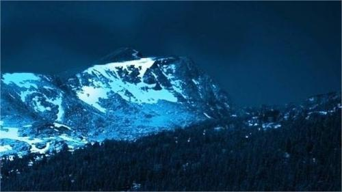

17 De Diciembre
Se estrenara pablo?
Team Cherry hoy hace unos momentos Publico un post en tweeter"X", diciendo que tal vez hagan pablo para terminar la franquisia y luego tomar otro camino en sus vidas.
Leer Más...Team Cherry hoy hace unos momentos Publico un post en tweeter"X", diciendo que tal vez hagan pablo para terminar la franquisia y luego tomar otro camino en sus vidas.
Leer Más...
Estos ultimos meses no ah nevado nada, algunos piensan que esto se trata de alguna
maldicion, otros por el clima y a otros simplemente les re vale si nieva o no.
Pero cada quien lo suyo.
Se encontraron mas cadaveres en la loma de la derecha, todos fueron identificados, y
todos eran de cientos de años en el pasado, aun siguen buscando los cuerpo de las personas que
se acercaron al lago.
Aun que muchos ya perdieron la esperanza de encontrar algo.
Ya dejaron de buscar los cuerpos, dijieron que en el lago habian sustancias peligrosas e erosivas...Nadie cree que un lago tan limpio que hasta puedes beber de el tenga eso. Y luego de eso comenzaron con las teorias, se los llevan los "aliens"? acaso una "entidad" cerca del bosque? nadie lo sabe aun, seguimos investigando...
Leer Más...